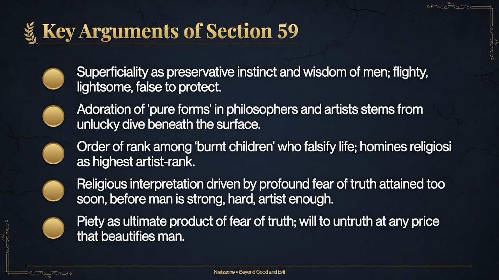
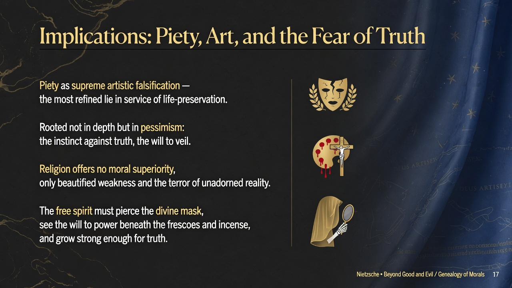
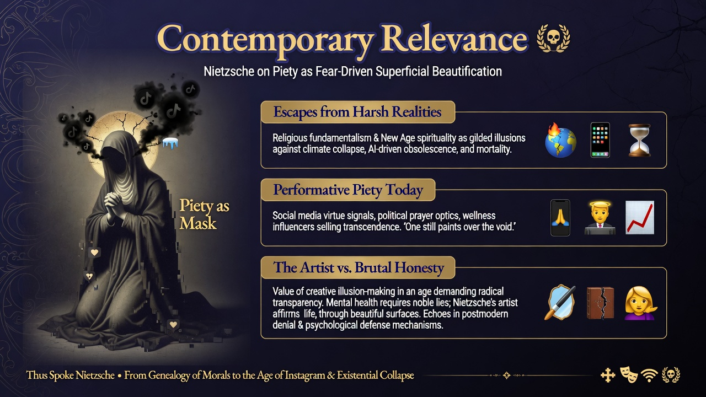

FRIEDRICH NIETZSCHE • 1886 • PART THREE
Section 59
Superficiality, Pure Forms, and Piety as the Fear of Truth
Identifier: 59
Simple modern summary
People stay shallow partly because depth can be dangerous, so they protect themselves with lightness and illusion. Piety is often fear of truth dressed up as holiness and art. Religion can beautify humans by helping them avoid what is too hard to face.
EXTENSIVE SUMMARY (Faithful to Text)
Key Quotes
- “Life in God,”
- “Whoever has seen deeply into the world has doubtless divined what wisdom there is in the fact that men are superficial. It is their preservative instinct which teaches them to be flighty, lightsome, and false.”
- “Piety, the "Life in God," ... would appear as the most elaborate and ultimate product of the FEAR of truth, as artist-adoration and artist-intoxication in presence of the most logical of all falsifications, as the will to the inversion of truth, to untruth at any price.”
- “Perhaps there has hitherto been no more effective means of beautifying man than piety, by means of it man can become so artful, so superficial, so iridescent, and so good, that his appearance no longer offends.”
Context
People who look too deeply into life often discover painful truths that can hurt or discourage them. To protect themselves, humans have a built-in instinct to stay on the surface, to keep things light, pretty, and false. Religion, especially piety or living "in God," turns out to be one powerful way people make life seem better and more beautiful than it really is.
Main points
- Being superficial helps people survive by shielding them from harsh realities they are not yet strong enough to face.
- Those who dive too deep and get hurt by truth often become artists or religious people who prefer beautiful illusions over raw facts.
- Piety is really a sophisticated form of fear that uses religious ideas to turn the world upside down and make untruth look good.
- Through piety, humans can make themselves appear charming, colorful, and virtuous so their real flaws do not offend others or themselves.
- Nietzsche sees religious devotion as the highest form of artistic falsification of life.
Validation: Summary drawn directly from the text of Section 59 (Kaufmann translation equivalents). Faithful to the wisdom of superficiality as preservative instinct, the cult of pure forms as symptom of unlucky dive, burnt children artists, homines religiosi as highest rank of falsifiers, piety as fear-driven artist-intoxication and supreme beautifier of man. ~515 words.
PRESENTATION SLIDES
Visual Slides
Dark Academia • Minimalist Keynote Style
1. Elegant Title Slide with Section Identifier and Key Quote

Elegant title slide with section number '59' and key quote 'what wisdom there is in the fact that men are superficial' or 'Piety... the most elaborate and ultimate product of the FEAR of truth'. Large gold serif title 'Section 59: Superficiality and the Fear of Truth'. Subtle imagery of shimmering superficial surface, falsified beautiful life image, religious figure or pure form icons half-veiled over dark abyss, deep navy black background, gold accents and delicate line work. beautiful minimalist PowerPoint slide design, professional typography, dark academia aesthetic with deep blues, blacks, gold accents, high resolution, clean layout like a philosophy lecture or Apple keynote
2. Visual Representation of the Core Concept

Visual representation of the core concept: Elegant symbolic scene of a 'burnt child' artist or homo religiosus revering a falsified, attenuated, ultrified and deified image of life on a shining surface, with subtle hint of the unlucky dive into dark depths beneath; iridescent, artful man made beautiful by piety. Poetic, high contrast dark academia aesthetic. beautiful minimalist PowerPoint slide design, professional typography, dark academia aesthetic with deep blues, blacks, gold accents, high resolution, clean layout like a philosophy lecture or Apple keynote
3. Key Arguments Bullet Style Slide

Key arguments bullet style slide titled 'Key Arguments of Section 59'. Bullets: 1. Superficiality as preservative instinct and profound wisdom for men. 2. Adoration of 'pure forms' betrays an unlucky dive beneath the surface. 3. Born artists enjoy life only by FALSIFYING its image as revenge; homines religiosi are the highest rank of such artists. 4. Piety is the ultimate product of the FEAR of truth attained too soon, before man is strong, hard, artist enough. 5. Piety beautifies man, rendering him artful, superficial, iridescent and good so his appearance no longer offends. Clean gold bullets on dark elegant background. beautiful minimalist PowerPoint slide design, professional typography, dark academia aesthetic with deep blues, blacks, gold accents, high resolution, clean layout like a philosophy lecture or Apple keynote
4. Critique or Implication Slide

Critique or implication slide titled 'Implications: Fear, Falsification, and the Will to Untruth'. Explores piety and religious interpretation as the highest artistic will to inversion of truth and untruth at any price; the 'beautifying' function of religion protects from pessimism but at cost of depth; prepares the free spirit who can face truth without such artist-intoxication; rank of artists vs. those who can bear reality. Elegant layout with subtle veil, mask, or surface/depth symbols. beautiful minimalist PowerPoint slide design, professional typography, dark academia aesthetic with deep blues, blacks, gold accents, high resolution, clean layout like a philosophy lecture or Apple keynote
5. Modern Relevance or Application Slide

Modern relevance or 'application' slide titled 'Contemporary Relevance'. Connects to today's curated social media surfaces and filtered 'pure' self-presentations as modern piety; therapeutic culture and positive thinking as fear-driven beautification avoiding hard truths; ideological or religious revival as will to untruth when strength for truth is lacking; value of cultivating 'artist enough' hardness for depth psychology or philosophy in age of superficiality and image-cult. Blend classical religious/art motifs with subtle modern screen or filter imagery. beautiful minimalist PowerPoint slide design, professional typography, dark academia aesthetic with deep blues, blacks, gold accents, high resolution, clean layout like a philosophy lecture or Apple keynote
HIGHLIGHTED QUOTES FROM THE SECTION (KAUFMANN)
"Whoever has seen deeply into the world has doubtless divined what wisdom there is in the fact that men are superficial. It is their preservative instinct which teaches them to be flighty, lightsome, and false."
"Piety, the 'Life in God,' ... would appear as the most elaborate and ultimate product of the FEAR of truth, as artist-adoration and artist-intoxication in presence of the most logical of all falsifications, as the will to the inversion of truth, to untruth at any price."
"Perhaps there has hitherto been no more effective means of beautifying man than piety, by means of it man can become so artful, so superficial, so iridescent, and so good, that his appearance no longer offends."
"Piety, the 'Life in God,' ... would appear as the most elaborate and ultimate product of the FEAR of truth, as artist-adoration and artist-intoxication in presence of the most logical of all falsifications, as the will to the inversion of truth, to untruth at any price."
"Perhaps there has hitherto been no more effective means of beautifying man than piety, by means of it man can become so artful, so superficial, so iridescent, and so good, that his appearance no longer offends."
Full text available in bge_analysis/sections/059.txt. Summary faithful to original; images generated via AI-generated per tailored prompts.
Self-contained HTML • Tailwind CDN • Part Three: What Is Religious (Sections 45-62) • Generated for BGE analysis project